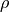

Mass brick¶
This brick represents a weak term of the form
It mainly represents a mass term for transient problems but can also be used for other applications (it can be used on a boundary). Basically, this brick adds a mass matrix on the tangent linear system with respect to a certain variable.
The function which adds this brick to a model is:
ind_brick = getfem::add_mass_brick
(md, mim, varname, dataexpr_rho="", region = size_type(-1));
where dataexpr_rho is an optional expression representing the density . If it is omitted, the density is assumed to be equal to one.

前のトピックへ
Isotropic linearized elasticity brick
次のトピックへ
Bilaplacian and Kirchhoff-Love plate bricks
Download
Main documentations
- GetFEM++ User documentation
- Python Interface
- Matlab Interface
- Scilab Interface
- Gmm++
- GetFEM++ project